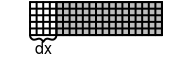
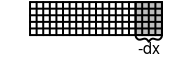
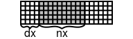

All case properties(geometry,BCs,model settings, etc.) are specified within XML files. Generally, the structure of the file should look like that:
<?xml version="1.0"?>
<CLBConfig>
<Units>
<Params/> <!-- Specify relation between LB and real world units here -->
</Units>
<Geometry> <!-- Domain size -->
<!-- Collision type, boundary conditions, creating/importing objects -->
</Geometry>
<Model>
<Params/> <!-- All parameters like velocity, density, viscosity -->
</Model>
<!-- Callbacks, python/r code -->
</CLBConfig>Working example with some sample values is shown below, along with explanation of each lines functionality.
<?xml version="1.0"?>
<CLBConfig version="2.0" output="output/test">
<Geometry nx="1024" ny="100">
<MRT><Box/></MRT>
<WVelocity name="Inlet"><Box nx="1"/></WVelocity>
<EPressure><Box dx="-1"/></EPressure>
<Wall mask = "ALL">
<Box ny="1"/>
<Box dy="-1"/>
</Wall>
</Geometry>
<Model>
<Params Velocity-Inlet="0.01"/>
<Params nu="0.05"/>
</Model>
<Solve Iterations="5000"/>
<VTK Iterations="50" what = "U,P"/>
<Solve Iterations="1000"/>
</CLBConfig>
| Element | Functionality |
|---|---|
<?xml version="1.0"?> |
Header required for all case files. |
<CLBConfig output="output/test"> |
All configuration settings must be contained within this element, additionally it is possible to specify deisred output path and/or filename prefix here. In example all files will be saved in ~TCLB/output folder, with all the filenames begining with test prefix. |
<Geometry nx="1024" ny="100"> |
Element containing all informations regarding geometry(domain size/shape, whats insinde domain). nx="1024"" ny="100" specifies a domain containing 1024 elements in x-direction and 100 in y-direction. TODO: specyfikacja nx,dx,fx etc. |
<MRT><Box/></MRT> |
MRT is |
<WVelocity name="Inlet"><Box nx="1"/></WVelocity> |
Creates velocity inlet at western side of the domain(TODO: Orientation), with width equal to 1 element and assignes it name Inlet(usefull for specifying zonal parameters later on). |
<EPressure><Box dx="-1"/></EPressure> |
Creates pressure outlet at eastern side of the domain, with width equal to to 1 element. |
<Wall mask = "ALL"> <Box ny="1"/> <Box dy="-1"/> </Wall> |
Creates wall elements. mask="ALL" tells us that all types(also from other groups) will be overwritten by wall element type, e.g the collision enabled in <MRT><Box/></MRT> will be disabled. |
</Geometry> |
Closing tag for <Geometry> element. |
<Model> |
Element containing all desired model settings(Params) |
<Params Velocity-Inlet="0.01"/> |
Setting the value of Velocity parameter to 0.01 in Inlet element(specified in Geometry). |
<Params nu="0.05"/> |
Setting the value of nu parametere to 0.05. |
</Model> |
Closing tag for <Model> element. The case is initialized after this tag. |
<Solve Iterations="5000"/> |
Runs 5000 iterations |
<VTK Iterations="50"/> |
Specifies that next <Solve> element will create an VTK output file every 50 iterations, saving there U and P quantities. By default everything is saved, creating rather large file for bigger cases. |
<Solve Iterations="1000"/> |
Runs 1000 iterations, creating VTK output every 50 iterations, as specified earlier. |
</CLBConfig> |
Closing tag for <CLBConfig> element, finishing whole case file. |
All case files start with <?xml version="1.0"?> header.
The configuration must be in the <CLBConfig> element(<CLBConfig/> at start and </CLBConfig> at the end). In this element the output path and/or prefix can be specified. In example above all files will be saved in ~TCLB/output folder, with all the filenames begining with test prefix.
<Geometry> element contains the definition of the domain and objects within it
It’s easy to imagine how the geometry elements are defined, by thinking about it as “painting”. Each geometry element must have 2 parameters “what are we painting with” and “where are we painting”:
<Wall mask="ALL">
<Box dx="4" nx="10" ny="30"/>
</Wall>In this example “what” is Wall element and “where” is <Box dx="4" nx="10" ny="30"/>. Defining “where” can be done in multiple ways, using nx,dx,fx arguments(similarly for y and z). To understand the geometry definition, you have to know that box element by default spans the whole available space. Then by imposing dx, nx and fx attributes you cut it smaller. dx sets where the box starts, nx sets how long is the box in the x direction, and fx sets where it ends. Additionally, if you set a negative value it means a value from the end. The same applies of course to y and z. For example:
| Element | Region |
|---|---|
<Box nx="1"/> |
Left border of the domain |
<Box dx="-1"/> |
Right border of the domain |
<Box dx="10"/> |
Everything starting from the 11th element (in x direction) |
<Box dx="-10"/> |
10 last layers in the x direction |
<Box nx="10" ny="10"/> |
Square 10x10 in the left bottom corner |
 <Box dx="4"/>
 <Box dx="-4"/>
 <Box dx="4" nx="10"/>
<Box dx="4" fx="10"/>
Box Creates a box with corners defined by nx/dx/fx etc. parameters.
Wedge Creates a wedge within a box, additionally direction must be specified (“LowerRight”,“LowerLeft”,“UpperRight”,“UpperLeft”) e.g: <Wedge dx="4" fx="10" dy="1" ny="10" direction="LowerRight"/>
Sphere Creates a sphere within a box, can have different dimensions in x/y/z.
Node type consists of several properties, which are organized in groups. Each node can have noly one property from each group. Additional groups can be